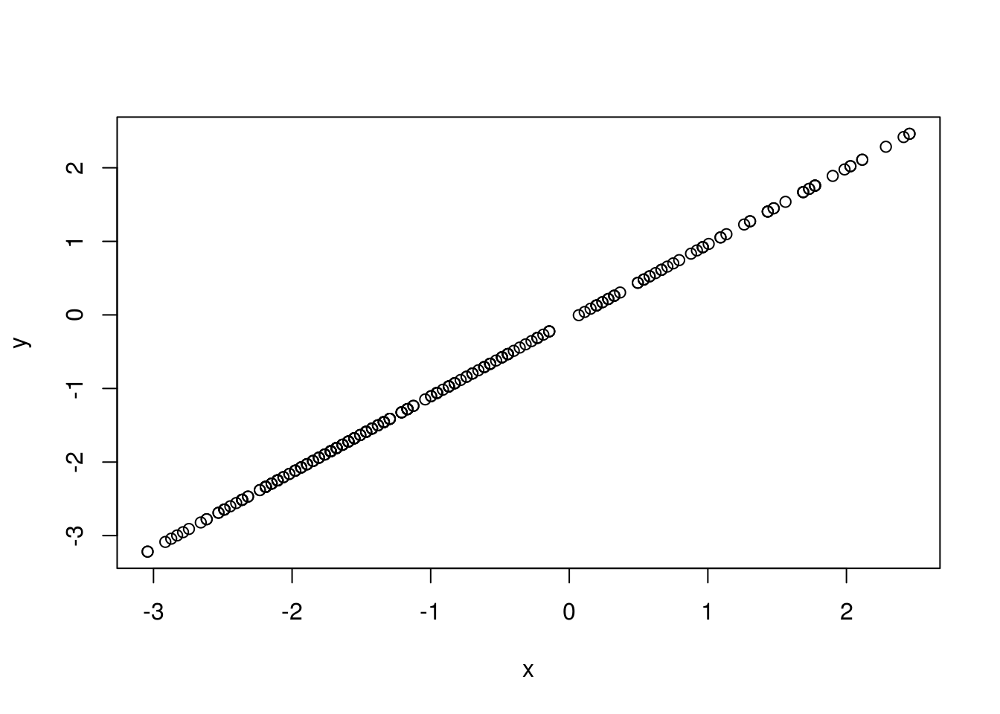
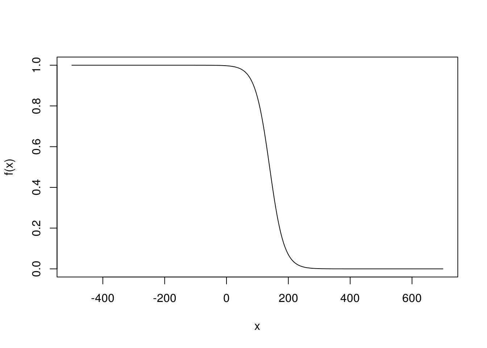
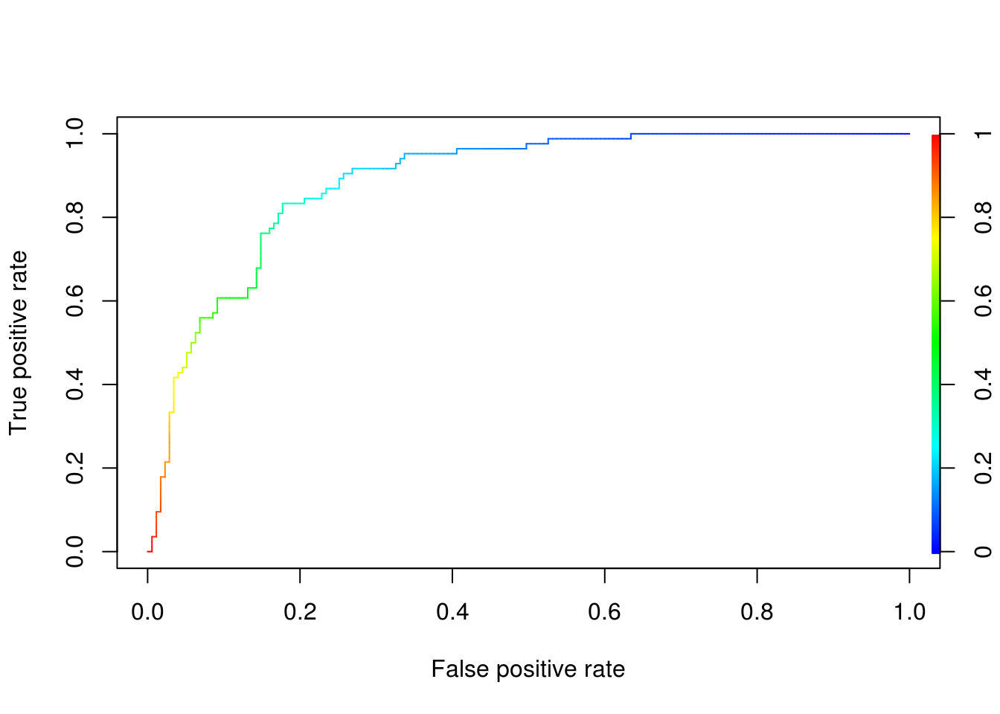

3 Logistic Regression
3.1 Usage
Similar to linear regression (part of the family of Generalised Linear Models). However it is part of a group of models called classifiers (tries to group elements/events) and this most often involves qualitative rather than quantitative data. Unlike linear regression, which is used mostly chosen for inference (studying the relationship between variables, effects of each other, strength and direction), we usually use logistic regression for predicting (or sometimes studying) a binary outcome (has only two outcomes, patient has diabetes or not, transaction is fraud or legit). The model does that by measuring the probability associated with each of the two and based on a chosen threshold will decide on one (e.g if \(p > 0.5\) a transaction is fraud). It assigns those probabilities by taking into account the predictors we have provided and their approximated coefficients as calculated from the data, that we have trained the model with. For example location of the transaction, time or money.
As with linear regression, quantitative data is handled by assigning a dummy variable boolean (e.g \(\text{isFraud} = 1\), \(\text{isNotFraud} = 0\)). We are interested in finding how close a point is to \(1\) (in other words its probability of success (fraud in this case) plotted on the \(y\) axis), as measured by the predictors (\(x\), \(z\) … axis). The issue is that we can get any value between \(0\) and \(1\), as well as values above and bellow that (e.g if the amount of money used in a transaction is extremely large we might get something like \(p = 2.3\) according to whatever coefficients in \(y = \beta_0 + \beta_1x_1 + \beta_2x_2 + \ldots + \beta_nx_n + \epsilon\) are calculated). This is not as useful and sometimes does not make sense, that’s why we use a transformation to fit our data exactly between \(0\) and \(1\).
3.2 Formula
There are various transformation for that, in logistic regression we use the logistic function: \(P(x) = \frac{e^{(\beta_0 + \beta_1x)}}{1 + e^{\beta_0 + \beta_1X}}\), where \(b0\) and \(b1\) are our coefficients, this makes an S-shaped curve where the edges are \(0\) and \(1\). We want to try and bring this in a more linear form, after manipulation we can see that:
\(\frac{P(x)}{1 - P(x)} = e^{\beta_0 + \beta_1x}\)
\(\frac{P(x)}{1 - P(x)}\), is called the the odds. It is the probability of success over the probability of failure. It is used for example in horse-racing where if the odds are \(\frac{1}{3}\) the horse is likely to win one race but loose \(3\). To make our equation more linear we can take the log. We notice that this is basically a linear equation using the log of the odds on \(y\)-axis \(log(\frac{P(x)}{1 - P(x)}) = \beta_0 + \beta_1x\), this makes things a lot easier (see more about why it’s helpful later on)
3.3 Maximum Likelihood
Another issue is how we can find the ‘best fit line’, that best describes all our data points. In linear regression we used the least squares approach. This required measuring the residuals (distance of our points to the line) and trying to minimise that value by moving the line. However the distance of the points from a random line (close to the real) in linear regression is somehow constant, the error has a constant standard deviation. In logistic regression when a predictor reaches extreme points the distance will tend to \(\pm \infty\). For example if we try and fit a line for the probability of a transaction been fraud based on the money involved; a line close to the best fit would have very large distance on the points where the amount of money involved in a transaction is large, or where it is very little. For that reason the method of maximum likelihood is preferred.
We use the following steps to do that:
Take a random straight line (a candidate ’best fit, just like in regression), that we think describes our points well
Use the \(P(x) = \frac{e^{(\beta_0 + \beta_1x)}}{1 + e^{\beta_0 + \beta_1X}}\) (given above) to transform that street line to the S-shaped curve that plots the probability from \(0\) to \(1\) for each of our \(x\)
We can now use those calculated \(P(x)\) foe each of our \(x\) to access how good this candidate line is. For each \(x\) we can get the ‘predicted’ by the curve \(y\) (\(P(x)\)), which in this case is also called the ‘likelihood’ (in this case)
We then calculate the likelihood for ALL of the success cases (\(P(x)\)) and unsuccessful cases (\(1 - P(x)\)) (e.g probability, given by \(y\) value, of a fraud transaction actually been fraud, and probability, again as calculated by our model of a legit transaction been not fraud). Whether a point is a success of not, we know from the data we have already collected. To get the total, we just need to multiply everything. In a way this calculates ‘how likely we are’ to predicting everything correctly, so the higher that is the better.
In reality we prefer to calculate the \(\log\) of that probability instead. ‘It just so happens’ that the \(\log\) of the maximum of the \(\log\) of the likelihood is the same as the maximum of the likelihood. The reason why the \(\log\) is favoured stems from the fact that it is easier to differentiate a product. When looking for the max of an equation, we differentiate that equation and look for where it is equal to \(0\). If we take the \(\log\) of the equation we turn a difficult problem of differentiating into differentiating a sum since \(\log(a \times b) = \log(a) + \log(b)\), which is easy to solve.
Finally, we choose the candidate line (which has our coefficients), that results in the higher \(\log\) likelihood. (Software like R does this very very easily using ‘smart algorithms’)
3.4 R-squared
But if we can’t calculate the residuals (distance of the predicted \(y\) (from our line) to the true \(y\) (from our points) how do we calculate the R-squared and p-values. well this is not as simple as in linear regression and there are dozens different ways to do it. An easy and common way, supported by R, is the MacFadden’s Pseudo R-squared, this is very similar to how its calculated in linear regression.
If we remember, R-squared is a value measuring how much of the variation in \(y\) is explained by our model, which indicates how well it fits the data. To find that value we calculate the total variation not described by the line, by dividing a measure of the distance of our points to the line, to the distance of our points to the mean. The we take one minus the outcome. This basically will show how much better our model is from just predicting using the mean, no predictors involved. So all we need to do is find a different way of calculating how fit the model is to the data and what the predictions would be if we used the mean instead. Well we already have the first, the \(\log\) of the likelihood for our curve (LL(fit)), exactly explains how close our predictions are to the true \(y\). We can get the probability of a case been successful, without accounting for any predictors, simple by the definition of probabilities \(P(\text{of success}) = \frac{\text{successful cases}}{\text{total cases}}\).
Using that as the \(p(x)\) for ALL of our values we can can get the log of the likelihood as before (LL(overall)). We can then compare the two and see how much better our model is. Just like in linear regression the resulting R-square will be from \(0\) to \(1\).
3.5 The Saturated and Null Models
We know that the R-squared always takes values from \(0\) to \(1\). This helps us make objective conclusions on how well our model performs and compare the performance of different models. We know that it is given by \(1 - \frac{\text{some measure of fitness of our model}}{\text{some measure of fitness of a 'bad' model}}\), to show how much ‘better’ our model is. In linear regression our model’s fitness is measured by the distance of the points to our line. This will only ever go as far as zero, since the perfect model will have zero distance. In linear regression we take the \(\log\) of the likelihood using the product of all the probabilities, a probability will only ever go as far as \(1\) resulting in \(\log(1) = 0\). What this means is that we had no need to provide an upper bound, all we needed was a lower bound, a measure of ‘bad’ performance which was making prediction by just using a mean, since the perfect model would always result having a zero as the nominator and giving us a R-squared of \(1 - 0 = 1\), a perfect fit.
However this is not always the case, in many other models the calculation of R-squared could result in any number, and this would not provide any clear indication of whether our model is doing well or not. This is why we need an upper bound. That upper bound is just a model that fits perfectly all our data points and is called the Saturated model. It requires all the data points as parameters to be able to make a model that perfectly fits them all and maximises the likelihood. If you are wondering why don’t we just use that model, if it maximises the likelihood, the answer is that it usually does not follow the format we are looking for. It is not genericised (it suffers from overfitting) and will not allow us to make any accurate predictions or study relationships. In a way, it is just a random line that crosses all the data points and does not really show any patterns, cannot be described by an algorithm and may result in unnecessary over-complications. The opposite of the saturated model is the Null model, a model that uses only one parameter (for example the mean in the linear regression), we already used that as the lower bound. The model that we are trying to measure the performance of by comparing it to the null and saturated is called the Proposed model.
The general form of R-squared can be described by \(1 - \frac{\text{a measure of bad fit} - \text{a measure of fit of our model}}{\text{a measure of bad fit} - \text{a measure of perfect fit}}\), which will always result is \(0\) to \(1\), since Null model is the minimum and Saturated the Maximum. ‘it just so happened’ that up to now the measure of perfect fit was zero so it could be omitted.
3.6 Residual and Null Deviance
When we get the summary statistics of a logistic regression model, R outputs something called Residual and Null Deviance. Those are nothing more that just more performance measurements for our model, which are derived by comparing how far our proposed model is from the Null (bad) model and how close it is to the Saturated (perfect) model. More specifically:
- \(\text{Residual Deviance} = 2(\text{log of likelihood of Saturated} - \text{log of likelihood of proposed})\)
- \(\text{Null deviance} = 2(\text{log of likelihood of proposed} - \text{log of likelihood of null})\)
Those two output a chi-square value that can be used to calculate a p-value which indicates whether our proposed model is significantly far from the Null and Saturated model. We want those outputs to be as small as possible. When we try and optimise our model by adding and removing predictors we should take note of the effect on those values!
3.7 p-values
For p-values we can simply use the chi-square distribution (see chapter chi-square test). The chi-square value equals 2(LL(fit)-LL(overall)) and the degrees of freedom are the difference in the parameters of LL(fit) and LL(overall). From those you can calculate the area under the graph which will give the probability of getting such values randomly, if there is no correlation between your predictors and reaction.
3.8 Introductory Demonstration in R
We will use the Titanic data to see if we can use the given attributes as predictors that determine whether or not a passenger survived.
install.packages("titanic")library(titanic)
data("titanic_train")
# Set our data
data <- titanic_train
# Replace missing values for Age with mean
data$Age[is.na(data$Age)] = mean(data$Age, na.rm = TRUE)# Remove attributes that are not valuable
install.packages("dplyr")library(dplyr)data <- data %>% select(-c(Cabin, PassengerId, Ticket, Name))
# Use factors for the following attributes:
for (i in c("Survived","Pclass","Sex","Embarked")){
data[,i] = as.factor(data[,i])
}
# Creates a general linear model (family = binomial specifies logistic
# regression)
gml.fit = glm(Survived~., data = data, family = binomial(link ='logit'))
# We can see our estimated coefficients and associated p-values
summary(gml.fit)##
## Call:
## glm(formula = Survived ~ ., family = binomial(link = "logit"),
## data = data)
##
## Deviance Residuals:
## Min 1Q Median 3Q Max
## -2.6235 -0.6098 -0.4222 0.6100 2.4512
##
## Coefficients:
## Estimate Std. Error z value Pr(>|z|)
## (Intercept) 16.414388 610.558089 0.027 0.97855
## Pclass2 -0.924047 0.297882 -3.102 0.00192 **
## Pclass3 -2.149626 0.297749 -7.220 5.21e-13 ***
## Sexmale -2.709611 0.201336 -13.458 < 2e-16 ***
## Age -0.039320 0.007888 -4.984 6.21e-07 ***
## SibSp -0.322143 0.109545 -2.941 0.00327 **
## Parch -0.095061 0.119028 -0.799 0.42450
## Fare 0.002261 0.002462 0.918 0.35842
## EmbarkedC -12.311604 610.557974 -0.020 0.98391
## EmbarkedQ -12.341443 610.558025 -0.020 0.98387
## EmbarkedS -12.757357 610.557962 -0.021 0.98333
## ---
## Signif. codes: 0 '***' 0.001 '**' 0.01 '*' 0.05 '.' 0.1 ' ' 1
##
## (Dispersion parameter for binomial family taken to be 1)
##
## Null deviance: 1186.66 on 890 degrees of freedom
## Residual deviance: 783.74 on 880 degrees of freedom
## AIC: 805.74
##
## Number of Fisher Scoring iterations: 13# Getting the R-squared
install.packages("DescTools")library('DescTools')##
## Attaching package: 'DescTools'## The following object is masked from 'package:car':
##
## Recode## The following object is masked from 'package:Ecfun':
##
## BoxCox# You will notice this is relatively low, it not easy to predict the survival of
# a passenger only given a few details about them a lot of random factors are
# involved. There are also a lot of limitations in our model.
PseudoR2(gml.fit)## McFadden
## 0.3395424We notice that this is a multivariate logistic regression, that takes the form of: \(log(\frac{p(x)}{1 - p(x)}) = \beta_0 + \beta_1x_1 + \beta_2x_2 + \ldots + \beta_nx_n + \epsilon\)
3.9 Limitations
3.9.1 Confounding
We often use logistic regression (and other models) to study the effects of various variables on an the occurrence of an event. We will use the following examples:
- How does smoking affect the probability of a patient developing lung diseases
- How does the fact that an individual is a student affect their probability of defaulting in the bank account
When we conduct such a study measuring how many smokers have developed lung disease versus how many non smokers, and how many students have defaulted versus how many non-students, we will most probably find a positive relationship. We cannot however, blindly trust the bivariate analysis, I mean unless we managed to get a perfectly random and balanced across all ages, sexes, incomes … sample there is a good chance that our results are partially the result of other variables masked under the ones we have chosen to study. For example studies have shown that there are more older people that are smokers, also older people tend to be more prone to diseases. So when we only use smoker/non smoker part of why our coefficient for that predictor would be so high is because smokers are also older people. This is called bias due to confounding and occurs when confounders (such as age) are not included in our model. If we take the example of students, when we only use student/non-student to predict the probability of someone defaulting we will find a positive correlation. However, studies have shown that students with the same income as non-students are less likely to default. Here the confounder is income, it just so happens that students will tend to have lower income, which makes them prone to defaulting. Therefore not including this in our models could result in biased predictions.
In the older days, where creating such models was more difficult due to computing power and software not been as readily available people used ‘stratifying’ in order to reduce the effects of confounding. They would have to separate their data in subsets (strata) that were free of confounders. For example split by age groups or by student/non student. Then they would conduct the estimation of coefficients separately for each group and use techniques such us pooling or weighted averaging (if it made sense) to get an overall estimation of the coefficients.
If you are interested to learn more about this you can watch this video from a Harvard lecture: https://www.youtube.com/watch?v=hNZVFMVKVlc
For reference, if we were to strictly define what a confounder is, it would be a variable that satisfies the following conditions:
- Confounders has to be related to one of the significant predictors (e.g older people tend to be smokers more than younger)
- It has to able be independently related to the reaction (e.g. age is also on its own a significant predictor of someone developing a disease)
- It is not part of the casual pathway (e.g smoking does not cause you to be old)
3.9.2 Multicollinearity
Logistic regression also assumes no or little multicollinearity among the predictors. (see previous chapter)
3.9.3 Interaction terms
Exactly the same as with linear regression (see previous chapter). Including the product (combination) of certain predictors could optimise the model. \(\log(\frac{P(x)}{1 - P(x)}) = \beta_0 + \beta_1x_1 + \beta_2x_2 + \beta_3x_1x_2\)
3.9.4 Heteroscedasticity (not relevant)
In logistic regression, we except a probability to be systematically further away from the predicted \(y\), in other words homoscedasticity is not an assumption in this case. This is why we are unable to use least squares to find our best fitting line on the first place, since the residuals (distance of our points to the line) are reaching \(\mp\infty\).
3.10 Measuring Performance Using Confusion matrix
Let’s use another example. Predicting whether or not a patient is diabetic. Our sample data set contains attributes such as BMI, age and measurements of glucose concentration, as well as a boolean that indicates whether or not each patient is diabetic. We hope to use those attributes as predictors for the patients diabetic condition. This time we will use one other technique for measuring how well our model preforms in giving accurate predictions. It is a common technique used in various models and not just logistic regression. Basically we will split the data that we have in two, the training data and the testing data. Our training data will be \(80%\) of the total and it will be used to estimate the coefficients and draw the S-curve by assigning probabilities (in other words training our model). The test data will be then fed to the trained model (without the attribute that gives out if a patient is diabetic) and our model will give a prediction for each of the row. That prediction will be according to a threshold we have assigned, for example we may choose that if the probability of a patient been diabetic is \(p \geq 0.5\) then we predict they are diabetic. Since we actually know if the patients in the test data are diabetic or not, we can compare the actual to the predicted outcomes and get a \(%\) accuracy. We will see how this is done in detail, as well as how we can optimise the chosen threshold for our specific problem.
# We can use a csv that is available online for our data, we can load this in R
# using the following code:
data <- read.csv(file = "http://www2.compute.dtu.dk/courses/02819/pima.csv",
head = TRUE,
sep = ",")3.10.1 Splitting the Data
# First we need to split our data, we do this with the use of caTools library
# (there are other ways too).
# The following creates an array of TRUE/FALSE values for every row in our data
# set, where TRUE is 80% of the data. It does this 'randomly', later on we will
# see techniques for spreading the success and failure rates proportionally
# across training and testing data.
library(caTools)
split <- sample.split(data, SplitRatio = 0.8)
split## [1] TRUE TRUE FALSE TRUE TRUE TRUE TRUE TRUE FALSE# Transform to factors
data$type <- as.factor(data$type)
# We then split the data using that array, where TRUE is for the training and
# FALSE is for the testing
trainingData <- subset(data, split == TRUE)
testingData <- subset(data, split == FALSE)
# Create the model using the TRAINING data
model <- glm(type ~., trainingData, family = binomial(link = 'logit'))
# Review our model
summary(model)##
## Call:
## glm(formula = type ~ ., family = binomial(link = "logit"), data = trainingData)
##
## Deviance Residuals:
## Min 1Q Median 3Q Max
## -3.2185 -0.6092 -0.3336 0.5978 2.3026
##
## Coefficients:
## Estimate Std. Error z value Pr(>|z|)
## (Intercept) -9.179437 1.419568 -6.466 1.00e-10 ***
## X -0.003374 0.001879 -1.796 0.07248 .
## npreg 0.130182 0.069738 1.867 0.06194 .
## glu 0.040785 0.006404 6.368 1.91e-10 ***
## bp -0.013902 0.014822 -0.938 0.34828
## skin 0.002866 0.023919 0.120 0.90463
## bmi 0.096078 0.034326 2.799 0.00513 **
## ped 1.308363 0.545403 2.399 0.01644 *
## age 0.013224 0.021088 0.627 0.53062
## ---
## Signif. codes: 0 '***' 0.001 '**' 0.01 '*' 0.05 '.' 0.1 ' ' 1
##
## (Dispersion parameter for binomial family taken to be 1)
##
## Null deviance: 326.38 on 258 degrees of freedom
## Residual deviance: 214.83 on 250 degrees of freedom
## AIC: 232.83
##
## Number of Fisher Scoring iterations: 5# As expected BMI and glu are significant (you can try and remove the predictors
# with a larger p-value but do this incrementally and note the effect it has on
# the Null and Deviance residuals (see above) )3.10.2 Visualisations
# We will use only glu to plot our graphs easier
gml.fitGlu = glm(type ~ glu,
data = trainingData,
family = binomial(link ='logit'))
summary(gml.fitGlu)##
## Call:
## glm(formula = type ~ glu, family = binomial(link = "logit"),
## data = trainingData)
##
## Deviance Residuals:
## Min 1Q Median 3Q Max
## -2.2557 -0.6869 -0.4769 0.6493 2.3822
##
## Coefficients:
## Estimate Std. Error z value Pr(>|z|)
## (Intercept) -6.211176 0.757805 -8.196 2.48e-16 ***
## glu 0.044028 0.005866 7.505 6.13e-14 ***
## ---
## Signif. codes: 0 '***' 0.001 '**' 0.01 '*' 0.05 '.' 0.1 ' ' 1
##
## (Dispersion parameter for binomial family taken to be 1)
##
## Null deviance: 326.38 on 258 degrees of freedom
## Residual deviance: 246.37 on 257 degrees of freedom
## AIC: 250.37
##
## Number of Fisher Scoring iterations: 4# First we will plot the best fitting line of probability of survival over age
# We need to get the probabilities for each row
p <- predict(gml.fitGlu, trainingData, type = "response")
# Get the log of the odds, which is our y
y <- log(p/(1 - p))
# Substitute with our calculated coefficients for the x axis
x <- -5.940285 + 0.042616 * trainingData$glu
plot(x, y)
# Now let's transform it to the S-shaped curve with y from 0 to 1.
# This is just the logistic function where i have substituted the coefficient
# for the intercept for our x with the ones calculated from our model summary.
f <- function(x) {
1 / (1 + exp(-5.940285 + (0.042616 * x )))}
x <- trainingData$glu
# This scales the graph
x <- -500 : 700
plot(x, f(x), type = "l")
3.10.3 Confusion Matrix Calculations
# The predict() function allows us to feed new data in the trained model and
# receive a probability of each patient being diabetic; we will use this on our
# testing data.
# type = response outputs the probability of each patient been diabetic, we save
# the array of probabilities on pdata
pdata <- predict(model, testingData, type = "response")
# We will use those probabilities to predict whether the patient is diabetic or
# not according to our model, given a threshold (p > 0.55 in this case) and then
# compare the outcomes to the real values. We already know if those patients are
# actually diabetic. We will compare the predicted to the actual values using a
# confusion matrix.# We will use the Caret library for that
install.packages("caret")library(caret)## Loading required package: lattice##
## Attaching package: 'caret'## The following objects are masked from 'package:DescTools':
##
## MAE, RMSE# Create two arrays that contain TRUE or FALSE for each row (is diabetic TRUE,
# is not diabetic FALSE) one for the predicted data and one for the actual, in
# order to compare them in R they need to be type factors (enumerations) and
# have of the same levels (take on the same values)
# For the predicted TRUE is a row of probability > 0.55
predicted <- as.factor(pdata > 0.55)
# For the actual data, either or not a patient is diabetic is given by yes or
# no, so true is yes
real <- as.factor(testingData$type == "Yes")# use caret to compute a confusion matrix
install.packages("e1071")cm <- confusionMatrix(data = predicted, reference = real)
cm## Confusion Matrix and Statistics
##
## Reference
## Prediction FALSE TRUE
## FALSE 44 12
## TRUE 4 13
##
## Accuracy : 0.7808
## 95% CI : (0.6686, 0.8692)
## No Information Rate : 0.6575
## P-Value [Acc > NIR] : 0.01560
##
## Kappa : 0.4729
## Mcnemar's Test P-Value : 0.08012
##
## Sensitivity : 0.9167
## Specificity : 0.5200
## Pos Pred Value : 0.7857
## Neg Pred Value : 0.7647
## Prevalence : 0.6575
## Detection Rate : 0.6027
## Detection Prevalence : 0.7671
## Balanced Accuracy : 0.7183
##
## 'Positive' Class : FALSE
## # We can see that this has outputted a table describing the following in each
# cell:
# | Predicted | Actual | Name |
# |-----------|--------|---------------------|
# | True | True | True Positive (TP) |
# | True | False | False Positive (FP) |
# | False | False | True Negative (TN) |
# | False | True | False Negative (FN) |
#
# If predict a patient is diabetic when they are not that's a False Positive,
# also known as a type 1 error
#
# If we predict a patient is not diabetic when they are that's a False Negative;
# also known as a type 2 error.
#
# Prediction: True
# |
# V
# False Positive
# ^
# |
# Actual: False3.10.4 Measuring Accuracy
It has also outputted some metrics on the performance of our model, lets explain them:
Sensitivity (also known as true positive, recall or hit rate) measures how well your model does in predicting positive values (predicting that the patient is diabetic when they actually are), given by: \(\frac{\text{TP}}{\text{TP} + \text{FN}}\)
Specificity (also known as true negative rate) measures how well your model does in predicting negative values, (predicting that the patient is not diabetic when they actually aren’t), given by: \(\frac{\text{TN}}{\text{TN} + \text{FP}}\)
Accuracy gives an overall performance measurement on the accuracy of the results on a scale of \(0\) to \(1\), with \(1\) meaning that the model predicted everything correctly, given by: \(\frac{\text{TP} + \text{TN}}{\text{TP} + \text{FP} + \text{FN} + \text{TP}}\)
There is a big problem with using this metric as a performance indicator. Let’s use an example where we create a model that simply always outputs False. We use that model to predict whether or not an individual has a very rare disease that is estimated only \(1\) on \(100\) people have. If we use that model on a very large sample of people (that are already diagnosed and know whether or not they have the disease) and then see how our model did, we will measure something like a \(0.99\) accuracy. That is amazing right, our model is “\(99%\) accurate”! This illustrates how this metric is biased by what proportions of positive and negative values are available, a model could do well simple by chance like we show in our example.
3.10.5 The Kappa Coefficient
Cohen’s Kappa coefficient is a metric that tries to tackle the problem of bias in the measurement of accuracy. It does so by ‘eliminating’ the chance of randomly getting a correct prediction from the equation.
This ‘chance’ is just given by probability of randomly selecting a true value from the sample plus the probability of randomly selecting a false from the sample, since we want to measure both the chance of predicting True when True and False when False. In the sample (confusion matrix), we could select a false value either from the total predicted false or the total actual false. So we need to multiply the probabilities associated with both. Similarly we could select a positive value either from the total predicted positive or the total actually positive.
# From our confusion matrix table we can get:
# FN + FP
totalFALSE <- 47 + 15
# TP +TN
totalTRUE <- 5 + 7
# NT + NF
totalNegative <- 47 + 5
# PT + PF
totalPositive <- 15 + 7
# Everything
totalSAMPLE <- 47 + 5 + 15 + 7
P_of_true_from_actual = (totalTRUE / totalSAMPLE)
P_of_true_from_predicted = (totalPositive / totalSAMPLE)
P_of_false_from_actual = (totalFALSE / totalSAMPLE)
P_of_false_from_predicted = (totalNegative / totalSAMPLE)
P_of_chance_for_TRUE <- P_of_true_from_actual * P_of_true_from_predicted
P_of_chance_for_FALSE <- P_of_false_from_actual * P_of_false_from_predicted
P_of_chance <- P_of_chance_for_TRUE + P_of_chance_for_FALSE
# We can see that our P_of_chance is very high, this is because we have more
# samples of False, there are more people that are NOT diagnosed with diabetes.
P_of_chance## [1] 0.6369613# To get the Kappa coefficient we would use the fallowing formula...
# First we need to select accuracy from our confusion matric metrics
accuracy <- cm$overall['Accuracy'][[1]][1]
#Kappa is given by:
Kappa <- (accuracy - P_of_chance)/(1-P_of_chance)
#we can see this is the same value given by R in the confusion matrix
Kappa## [1] 0.396268So how do we interpret Kappa, this is a bit vague and there is no clear answer but we can see some examples:
- \(1\) means our model is prefect
- \(0\) means it as good as chance
- Any negative value means it does worse than chance
- Anything close to \(0.3\) and above is relatively good
- Values of \(0.8\) and above are extremely rare
3.11 Optimising the Threshold
Changing the threshold will affect our models sensitivity and specificity. If we had a very low threshold where \(p\) is close to \(0\), then almost always we would predict that a patient was diabetic. This means that we would predict correctly True when True, but also True when False, in other words we would have a very high true positive rate. If we had a very high threshold, close to \(p = 1\), then almost always we would predict that a patient is not diabetic. This means we would predict False when False, but also False when True, in other words we would have a very high false positive rate.
Usually we want to balance this and we wind up somewhere in the middle. However, we need to apply domain knowledge and think about whether we care more about true positive rate or false positive rate. For example what is the effects of: predicting that a patient is diabetic when they aren’t (having more FP), referred to as type I errors versus predicting that a patient is not diabetic when they are (having more TN), referred to as type II errors. Usually in such cases we would be more concerned for the type 2 errors, since failing to diagnose a diabetes can have a greater impact on the patients health, so we might choose a \(p\) somewhere lower than \(0.5\) maybe \(0.4\).
# We can visualise how changing our threshold affects the true and false
# positive rate to help us choose the right p
install.packages("ROCR")library(ROCR)## Loading required package: gplots##
## Attaching package: 'gplots'## The following object is masked from 'package:stats':
##
## lowessresForTraining <- predict(model, trainingData, type = "response")
# Choosing a value
ROCRPred = prediction(resForTraining,trainingData$type)
ROCRPref <- performance(ROCRPred, "tpr", "fpr")
# We want something on the green region between 0.4 and 0.6, but closer to 0.4
# to ensure less type 2 errors
plot(ROCRPref, colorize = TRUE)